Saltstack 安装配置详解
下面这篇文章主要介绍另外一个运维自动化工具 Saltstack 。
一、简介
Saltstack 比 Puppet 出来晚几年，是基于Python 开发的，也是基于 C/S 架构，服务端 master 和客户端 minions ；Saltstack 和 Puppet 很像，可以说 Saltstatck 整合了 Puppet 和 Chef 的功能，更加强大，更适合大规模批量管理服务器，并且它比 Puppet 更容易配置。
三大功能： 远程命令执行，配置管理（服务，文件，cron，用户，组），云管理。
支持系统：大多数都支持，windows 上不支持安装 master。
二、安装配置
1、准备工作
准备两台机器，这两台机器都关闭 selinux，清空 iptables 规则并保存。
master：192.168.0.109
slaver：192.168.0.110
2、编辑 hosts 文件
两台都设置，若机器太多，可以通过搭建 DNS，则不用在每台机器上设置这个
# vim /etc/hosts 192.168.0.109 master.test.com 192.168.0.110 slaver.test.com
3、设置 hostname
在 master 上
[iyunv@master ~]# vim /etc/sysconfig/network
HOSTNAME=master.test.com
在 slaver 上
[iyunv@slaver ~]# vim /etc/sysconfig/network
HOSTNAME=slaver.test.com
4、安装
1）服务端安装
[iyunv@master ~]# yum install -y epel-release [iyunv@master ~]# yum install -y salt-master salt-minion
2）客户端安装
[iyunv@slaver ~]# yum install -y epel-release [iyunv@slaver ~]# yum install -y salt-minion
5、配置
服务端和客户端都要配置 master
# vim /etc/salt/minion //在第16行添加，冒号后有一个空格master: 192.168.0.109 |
6、启动服务
1）服务端
[iyunv@master ~]# /etc/init.d/salt-master start Starting salt-master daemon: [确定] [iyunv@master ~]# /etc/init.d/salt-minion start Starting salt-minion daemon: [确定]
2）客户端
[iyunv@slaver ~]# /etc/init.d/salt-minion start
Starting salt-minion daemon: [确定]
三、配置认证
1）在服务端上操作
[iyunv@master ~]# salt-key -a slaver.test.com[iyunv@master ~]# salt-key -a master.test.com[iyunv@master ~]# salt-key |

说明：-a ：accept ，-A：accept-all，-d：delete，-D：delete-all。可以使用 salt-key 命令查看到已经签名的客户端。此时我们在客户端的 /etc/salt/pki/minion 目录下面会多出一个minion_master.pub 文件。
2）测试验证
示例1： salt '*' test.ping //检测通讯是否正常，也可以指定其中一个 'slaver.test.com'
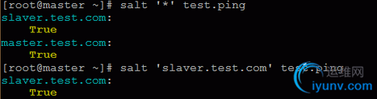
示例2: salt '*' cmd.run 'df -h' //远程执行命令
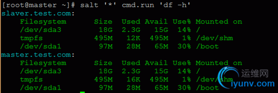
说明： 这里的 * 必须是在 master 上已经被接受过的客户端，可以通过 salt-key 查到，通常是我们已经设定的 id 值。关于这部分内容，它支持通配、列表以及正则。 比如两台客户端 web10、web11， 那我们可以写成 salt 'web*' salt 'web1[02]' salt -L 'web10,web11' salt -E 'web(10|11)' 等形式，使用列表，即多个机器用逗号分隔，而且需要加-L，使用正则必须要带-E选项。 它还支持 grains 和 pillar，分别加 -G 和 -I 选项，下面会介绍到。
四、grains 和 pillar
下面来介绍 grains 和 pillar
1、grains
grains 是在 minion（客户端）启动时收集到的一些信息，比如操作系统类型、网卡ip等。
使用命令：
[iyunv@master ~]# salt 'slaver.test.com' grains.ls //列出所有的 grains 项目名字 [iyunv@master ~]# salt 'slaver.test.com' grains.items //列出所有的 grains 项目名以及值
grains的信息并不是动态的，并不会时时变更，它只是在 minion 启动时收集到的。grains 也可以做配置管理。
下面我们来自定义 grains
1）客户端上配置
[iyunv@slaver ~]# vim /etc/salt/grains //添加如下，注意冒号后有空格 role: nginx env: test myname: tpp
或者
[iyunv@slaver ~]# vim /etc/salt/minion //在最下面添加或更改 grains: role: - nginx env: - test myname: - tpp
重启minion服务
[iyunv@slaver ~]# /etc/init.d/salt-minion restart |
2）服务端获取 grains
[iyunv@master ~]# salt 'slaver.test.com' grains.item role env myname //列出多个
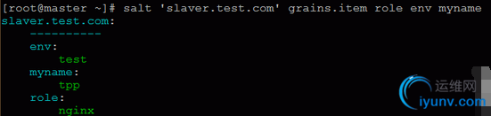
[iyunv@master ~]# salt 'slaver.test.com' grains.get myname //列出单个
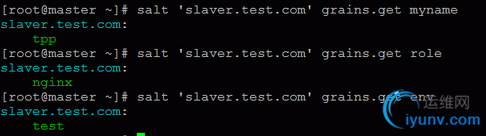
注意：grains 在远程执行命令时很方便。我们可以按照 grains 的一些指标来操作。比如把所有的 web 服务器的 grains 的 role 设置为 nginx，那这样我们就可以批量对 nginx 的服务器进行操作了：
[iyunv@master ~]# salt -G role:nginx cmd.run 'hostname' [iyunv@master ~]# salt -G os:CentOS cmd.run 'hostname'
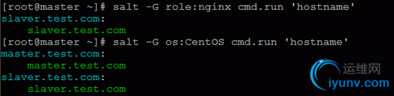
2、pillar
pillar 和 grains 不一样，是在 master 上定义的，并且是针对 minion 定义的一些信息。像一些比较重要的数据（密码）可以存在 pillar 里，还可以定义变量等。
查看指定minion的 pillar 值：
[iyunv@master ~]# salt 'slaver.test.com' pillar.items
1）服务端自定义配置 pillar
[iyunv@master ~]# vim /etc/salt/master //找到如下内容，去掉#号 pillar_roots: base: - /srv/pillar [iyunv@master ~]# mkdir /srv/pillar [iyunv@master ~]# vim /srv/pillar/test.sls //自定义配置文件，内容如下 conf: /etc/123.conf myname: tpp [iyunv@master ~]# vim /srv/pillar/top.sls //总入口文件，内容如下 base: 'slaver.test.com': - test
重启master
[iyunv@master ~]# /etc/init.d/salt-master restart
注意：当更改完 pillar 配置文件后，我们可以通过刷新 pillar 配置来获取新的 pillar 状态：
[iyunv@master ~]# salt '*' saltutil.refresh_pillar
2）验证：
[iyunv@master ~]# salt 'slaver.test.com' pillar.items
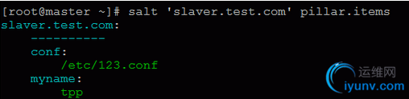
[iyunv@master ~]# salt 'slaver.test.com' pillar.item conf [iyunv@master ~]# salt 'slaver.test.com' pillar.item myname
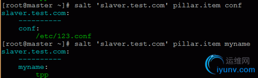
pillar 同样可以用来作为 salt 的匹配对象。比如：
[iyunv@master ~]# salt -I 'conf:/etc/123.conf' test.ping [iyunv@master ~]# salt -I 'conf:/etc/123.conf' cmd.run 'w'
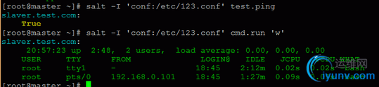
五、配置管理安装Apache
下面进行的演示是远程通过 yum 方式安装 Apache。步骤如下：
1、配置
[iyunv@master ~]# vim /etc/salt/master //打开如下内容的注释 file_roots: base: - /srv/salt
[iyunv@master ~]# mkdir /srv/salt [iyunv@master ~]# vim /srv/salt/top.sls base: 'slaver.test.com': - apache
[iyunv@master ~]# vim /srv/salt/apache.sls apache-service: pkg.installed: - names: //如果只有一个服务，那么就可以写成 –name: httpd 不用再换一行 - httpd - httpd-devel service.running: - name: httpd - enable: True
注意：apache-service 是自定义的 id 名。pkg.installed 为包安装函数，下面是要安装的包的名字。service.running 也是一个函数，来保证指定的服务启动，enable 表示开机启动。
2、重启服务
[iyunv@master ~]# /etc/init.d/salt-master restart
[iyunv@master ~]# salt 'slaver.test.com' state.highstate //执行时间比较长，因为要安装httpd
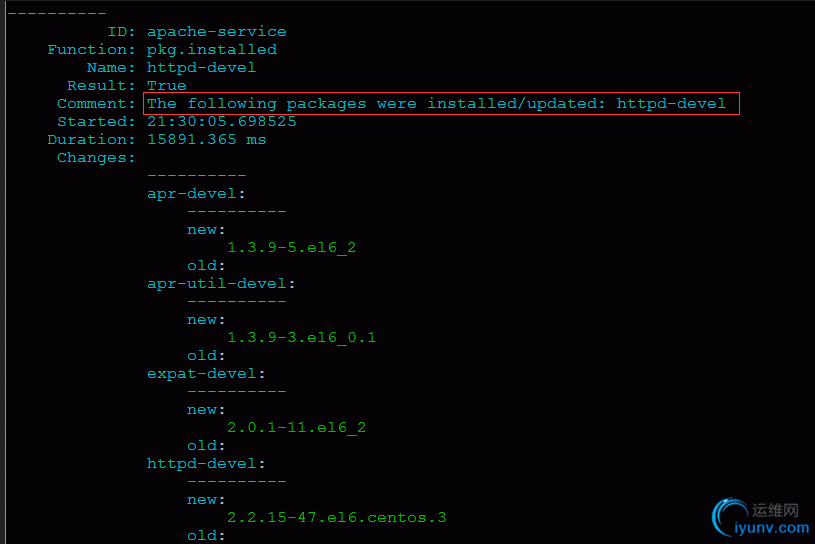
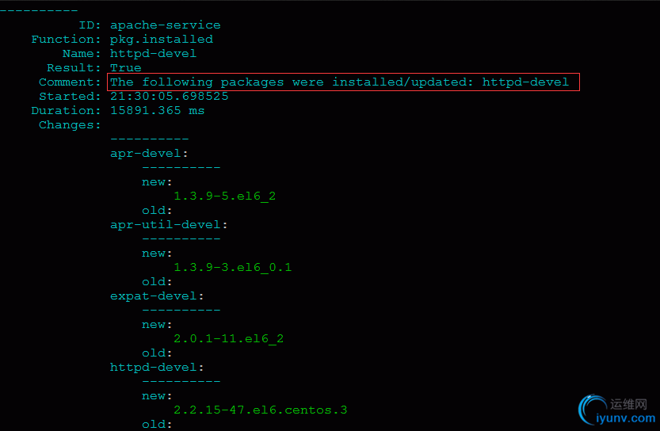
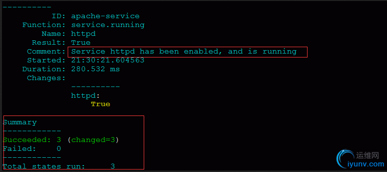
如上图所示，说明 Apache 远程安装已成功。
六、文件目录管理
1、文件管理
1）服务端配置
接着编辑之前的 top.sls 文件
[iyunv@master ~]# vim /srv/salt/top.sls //修改为如下 base: 'slaver.test.com': - filetest
新建 filetest.sls 文件
[iyunv@master ~]# vim /srv/salt/filetest.sls file-test: file.managed: - name: /tmp/filetest.txt - source: salt://test/123/1.txt - user: root - group: root - mode: 644
注意：第一行的 file-test 为自定的名字，表示该配置段的名字，可以在别的配置段中引用它；source指定文件从哪里拷贝，这里的 test 目录相当于是 /srv/salt/test 目录；name指定远程客户端要生成的文件。
新建所要测试的源文件
[iyunv@master ~]# mkdir -p /srv/salt/test/123/ [iyunv@master ~]# vim /srv/salt/test/123/1.txt msiyuetian.blog.iyunv.com
执行命令：
[iyunv@master ~]# salt 'slaver.test.com' state.highstate

2）客户端验证
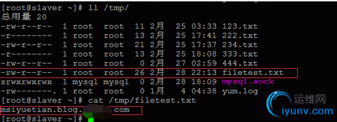
2、目录管理
1）服务端配置
[iyunv@master ~]# vim /srv/salt/top.sls //修改为如下 base: 'slaver.test.com': - filedir
[iyunv@master ~]# vim /srv/salt/filedir.sls file-dir: file.recurse: - name: /tmp/testdir - source: salt://test1/234 - user: root - file_mode: 644 - dir_mode: 755 - mkdir: True - clean: True
新建所要测试的源目录
[iyunv@master ~]# mkdir -p /srv/salt/test1/234 [iyunv@master ~]# vim /srv/salt/test1/234/2.txt msiyuetian.blog.iyunv.com
[iyunv@master ~]# salt 'slaver.test.com' state.highstate
2）客户端验证
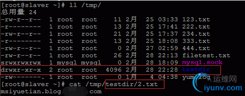
3）测试增删功能
在服务端新建 mydir 目录以及 testdir.add 文件，删除 2.txt 文件：
[iyunv@master ~]# mkdir /srv/salt/test1/234/mydir [iyunv@master ~]# touch /srv/salt/test1/234/mydir/111.txt [iyunv@master ~]# touch /srv/salt/test1/234/testdir.add [iyunv@master ~]# rm -rf /srv/salt/test1/234/2.txt
[iyunv@master ~]# salt 'slaver.test.com' state.highstate
客户端验证
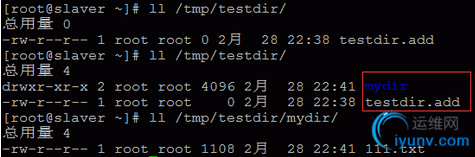
注意：由上图可知，成功在客户端 /tmp/testdir/ 目录下创建了 mydir 目录以及 testdir.add 文件，并删除 2.txt 文件。这里值得注意的是要成功创建 mydir 目录，前提是 mydir 目录下要有文件，如这里的111.txt 文件，如若没有，客户端是不会创建 mydir 目录的。
七、远程执行
前面提到远程执行命令 test.ping，cmd.run，点前面的是模块，点后面的是函数；这样总归是不太规范化，下面详细介绍怎么远程执行命令和脚本。
[iyunv@master ~]# vim /srv/salt/top.sls //修改为如下 base: 'slaver.test.com': - cmdtest
[iyunv@master ~]# vim /srv/salt/cmdtest.sls cmd-test:
cmd.run: - onlyif: test -f /tmp/123.txt - names: - touch /tmp/cmdtest.txt - mkdir /tmp/cmdtest - user: root
执行命令：
[iyunv@master ~]# salt 'slaver.test.com' state.highstate
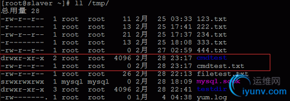
2、远程执行脚本
1）服务端配置
[iyunv@master ~]# vim /srv/salt/top.sls //修改为如下 base: 'slaver.test.com': - shelltest
[iyunv@master ~]# vim /srv/salt/shelltest.sls shell-test: cmd.script: - source: salt://test/1.sh - user: root
[iyunv@master ~]# vim /srv/salt/test/1.sh #!/bin/bash touch /tmp/shelltest.txt if [ -d /tmp/shelltest ] then rm -rf /tmp/shelltest else mkdir /tmp/shelltest fi
[iyunv@master ~]# salt 'slaver.test.com' state.highstate
注意：通过上面的例子，我们实现了远程执行脚本；如果我们想一键远程安装 LAMP 或者 LNMP，那么只需把本例中的 1.sh 脚本替换成 一键安装的脚本就行。
八、管理任务计划
1、建立 cron
1）服务端配置
编辑 top.sls 文件
[iyunv@master ~]# vim /srv/salt/top.sls //修改为如下 base: 'slaver.test.com': - crontest
[iyunv@master ~]# vim /srv/salt/crontest.sls cron-test: cron.present: - name: /bin/touch /tmp/111.txt - user: root - minute: '*' - hour: 20 - daymonth: 1-10 - month: '3,5' - dayweek: '*'
[iyunv@master ~]# salt 'slaver.test.com' state.highstate
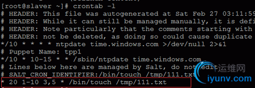
1）服务端配置
我们只需修改 crontest.sls 文件
[iyunv@master ~]# vim /srv/salt/crontest.sls
把 cron.present: 改成 cron.absent:
注意：两者不能共存，要想删除一个 cron，那之前的 present 就得替换掉或者删除掉。
执行命令：
[iyunv@master ~]# salt 'slaver.test.com' state.highstate
[iyunv@slaver ~]# crontab -l //可查看到该任务计划已删除
九、Saltstack 常用命令
1、拷贝文件到客户端
[iyunv@master ~]# salt 'slaver.test.com' cp.get_file salt://apache.sls /tmp/cp.txt slaver.test.com: /tmp/cp.txt
2、拷贝目录到客户端
[iyunv@master ~]# salt 'slaver.test.com' cp.get_dir salt://test /tmp slaver.test.com: - /tmp/test/1.sh - /tmp/test/123/1.txt
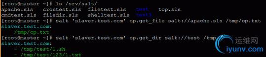
3、显示存活的客户端
[iyunv@master ~]# salt-run manage.up

4、命令下执行服务端的脚本
[iyunv@master ~]# vim /srv/salt/test/shell.sh #! /bin/bash echo "msiyuetian.blog.iyunv.com" > /tmp/shell.txt [iyunv@master ~]# salt 'slaver.test.com' cmd.script salt://test/shell.sh
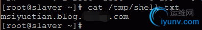
版权声明：本文为博主原创文章，未经博主允许不得转载
本文转自:http://www.cnblogs.com/lgeng/p/6567424.html